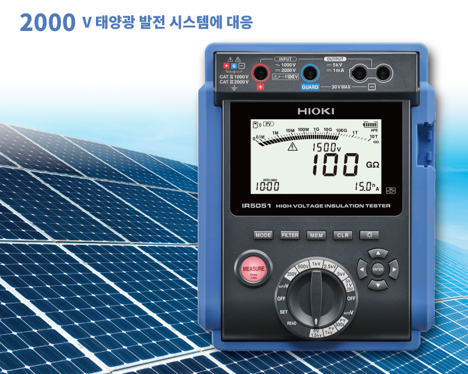
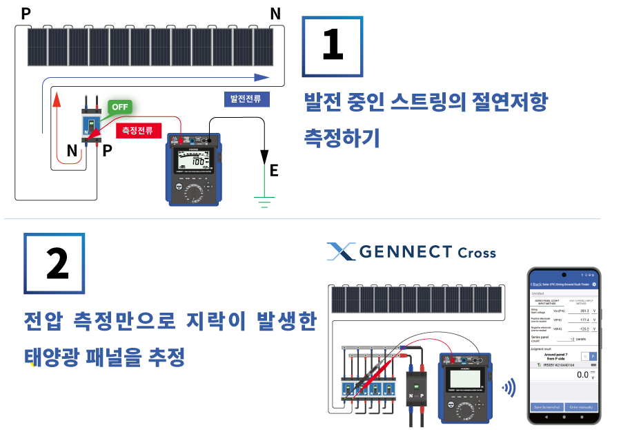
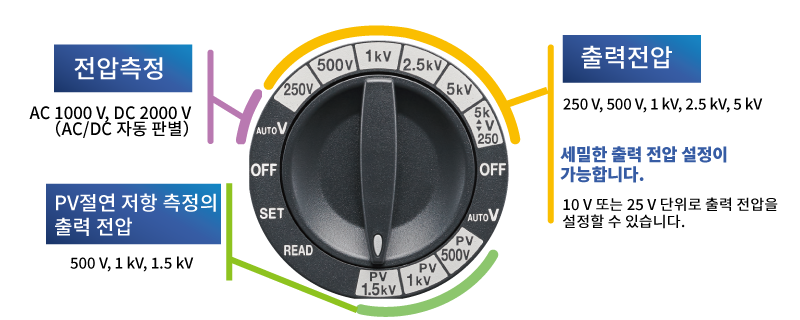
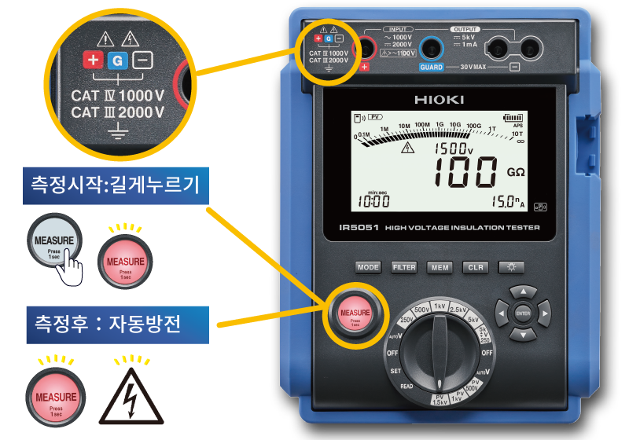
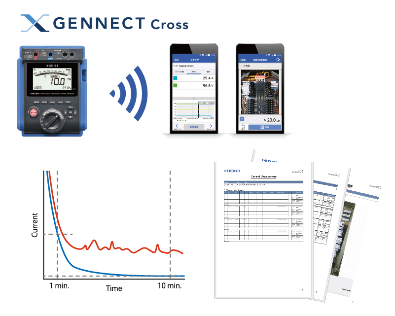
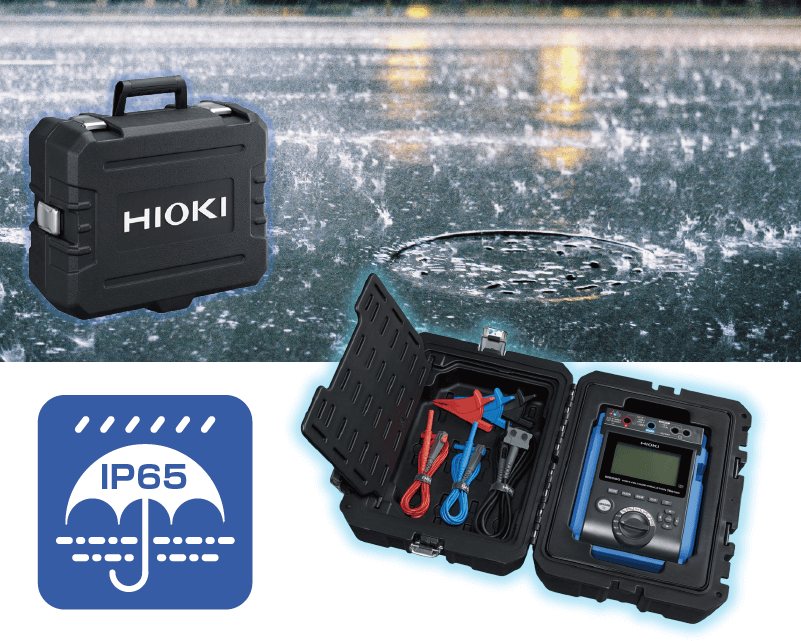

고전압 절연저항계 IR5051
제품 소개
HIOKI IR5051은 250V부터 5000V까지 출력 가능한 하이엔드 고전압 절연저항계입니다. PI/DAR/DD/SV/Ramp 등 다양한 절연진단 기능과 PV 절연저항 측정을 지원해 고압 케이블·변압기·태양광 설비 진단에 적합합니다.
주요 특징
- 정격 측정전압 250V~5000V, PV 절연저항(최대 DC 2kV) 측정 지원
- 절연진단기능: PI, DAR, DD, SV, Ramp, Timer
- 누설전류 측정(1nA~3mA 분해능), 정전용량(DD) 자동 측정
- 무선 어댑터 Z3210 장착 시 GENNECT Cross 연동, USB 통신 지원
- IP65 휴대용 케이스 장착 시 방수, 활선경고·자동방전 기능
본 정보는 제조사(HIOKI) 공식 자료를 기준으로 제공됩니다.
발전중에도 절연 저항 측정 가능

CAT III 2000V, CAT IV 1000V를 대응하는 IR5051은 DC 2000V 태양광 발전 시스템까지 절연저항 및 개방전압을 안전하게 측정할 수 있습니다. 발전 중에도 영향을 받지 않고 정확한 절연저항 값을 측정합니다.
2000V 태양광 발전 시스템에서 지락된 패널을 찾는 기능

① 발전 중인 스트링의 절연저항을 측정해 절연불량 스트링을 확인합니다. ② 해당 단로기의 전압을 측정해 무료 앱 GENNECT Cross로 전송하면, 지락이 발생한 태양광 패널의 위치를 표시합니다.
세밀한 출력 전압 설정 가능

직관적으로 조작할 수 있는 로터리 스위치로 출력 전압을 5가지 레인지(250V/500V/1kV/2.5kV/5kV)에서 선택할 수 있고, 10V 또는 25V 단위로 세밀하게 설정할 수 있습니다. 전압 측정은 AC/DC 자동 판별됩니다.
높은 안전성으로 설계된 절연 저항계

측정 시작은 1초간 길게 눌러야 시작되어 오작동으로 인한 고전압 발생을 방지합니다. 측정 후에는 대상에 잔류한 전하를 자동으로 방전하며, 방전 중에는 MEASURE 버튼과 방전 마크가 깜박입니다.
무선화에 대응, 무선 통신 기능으로 더욱 편리하게

옵션 무선 어댑터 Z3210으로 스마트폰·태블릿에 블루투스® 통신으로 측정값을 전송합니다. GENNECT Cross의 로깅 기능으로 1초 간격 시계열 그래프를 작성하고, 측정 위치·측정값을 사진으로 정리해 현장에서 PDF 보고서를 작성할 수 있습니다.
야외 작업을 지원하는 방진 방수 케이스

휴대용 케이스 C0102는 방진방수 성능 IP65의 하드 케이스로, 절연저항계 본체와 테스트 리드를 모두 수납할 수 있어 휴대가 편리합니다.